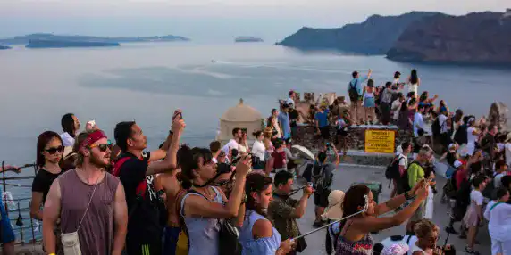

Nuire à la bioversité
Instagram, l’un des plus grand réseaux sociaux de notre ère, qui a initialement pour simple but de poster des photos prises par les utilisateurs, a pris une ampleur énorme ces dernières années. Désormais nous pouvons même poster des storys temporaires, de courtes vidéos appelées Réels. Selon une étude, 39% des internautes français utilisent Instagram. 1,287 milliards d’utilisateurs actifs en 2022 dans le monde. Cela exprime bien l’influence qu’a cette application sur la vie des utilisateurs, leurs opinions, humour ou même style vestimentaire…
L’influence malsaine
Cette application possède une grande influence comme nous l’avons dit, mais ce qui m’inquiète, c’est l’influence qu’elle a sur les destinations que choisissent les utilisateurs pour leur voyage. Mais, lorsque des internautes postent en masse des paysages idylliques de leur voyage, ces photos se retrouvant dans le feed de plus en plus d’utilisateurs et gagne en notoriété. Tant mieux pour le pays et le lieu me direz-vous… Malheureusement cela peut nuire aux paysages. Etant incité à visiter ces lieux, les visiteurs y courent en masse, quitte à les détruire. En effet certain lieux ne sont pas fait pour accueillir une foule de touristes, les calanques de Marseille par exemple connait un afflux de visiteurs et il est difficile pour les autorités locales de gérer les déchets laissés par les touristes irrespectueux de l’environnement, ou bien même les dégâts sur la flore marine à cause produit toxique pour elle, comme la crème solaire.
Ou bien encore Mykonos, ville de Grèce dans laquelle ses habitants voient leurs rues bondées de touristes, tentant de poser devant les magnifiques couchée de soleil, en vin… A force, ils détériorent les paysages. Ou encore en Espagne, ou les autorités ont remarqué l’habitude qu’on les touristes de déplacer des rochers pour prendre la pose dessus. Sans savoir que ceux-ci sont le refuge de lézard, d’insectes et d’araignées. Ces nombreux exemples montrent que la faune et la flore sont alors menacés par le pouvoir qu’ont les réseaux sociaux à influencer les gens à tout faire pour un selfie.